작업 흐름
- 입력
- 주제 하나(사자, 고래, 호랑이, 사슴, 잉어 …). 레퍼런스 영상이 있으면 그 스틸
- 브리프
- 생물의 몸 · 먹의 농담 · 무엇이 먼저 응결하는지 · 응결 곡선 · 수조 또는 열린 물 · 샷 표 · 소리를 적은
BRIEF.md - 몸
- 네발짐승(IK 다리, 디딘 발 고정) 또는 헤엄치는 몸(척추 파동 · 지느러미 · 꼬리), 일곱 방향과 주요 자세의 캐스트 시트, 모든 프레임의 관절 범위 · 발 · 진행 방향 검사
- 물과 먹
- 밀도 · 덮임 · 방출 세 채널로 칠한 몸을 발산 없는 흐름장으로 옮기고, 상류로 거슬러 모은 먹 연기와 번짐 · 젖은 가장자리로 합성. 샷마다 응결
e와fluid두 다이얼 - 출력
- 24fps 1920×1080 MP4(물방울 · 먹 번짐 · 포효 · 합성 음악), ♪ 버튼으로 소리까지 재생하는 라이브 페이지, AI 영상 도구용 반투명 레퍼런스 프레임과 프롬프트(선택)
node ink-water-emergence/scripts/new-film.mjs my-film
node ink-water-emergence/scripts/render.mjs my-film/cast.html --stills 0
node ink-water-emergence/scripts/check.mjs my-film
node ink-water-emergence/scripts/render.mjs my-film --sheet 16 --scale .5
node ink-water-emergence/scripts/score.mjs my-film/score.js --dur 13 --out out/film.wav
node ink-water-emergence/scripts/render.mjs my-film --audio out/film.wav요구 사항: Node + Playwright Chromium(WebGL2, GPU가 없으면 SwiftShader), ffmpeg. 네트워크가 필요 없습니다(CPU에서 1080p 한 프레임이 워커 하나에 약 1초, 13초 영상을 워커 3개로 약 6분). 단계별 순서는 SKILL.md에 있습니다.
샘플
스타일 예제 「狛獅子 · Guardian Lion」의 일곱 샷과, 원본에 없던 주제로 브리프부터 새로 설계한 「鯨の息 · Whale Breath」의 여섯 샷입니다. 카드를 누르면 새 탭에서 그 순간에 멈춘 장면이 열리고, 브라우저가 물과 먹을 직접 그립니다.
狛獅子 · Guardian Lion 16:9 · 13초 · 7샷
먹 한 방울이 연기가 되고, 머리부터 응결한 수호 사자가 옅은 몸으로 걸어 나와 짙은 먹으로 완성되어 포효합니다.
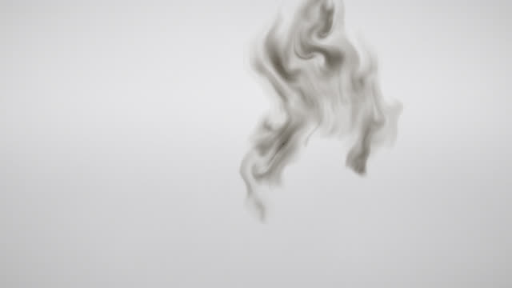
1 · 1.2초먹 한 방울wisps
고요한 물에 떨어진 먹이 사자 모양의 연기로 피어오르는 처음,
fluid 1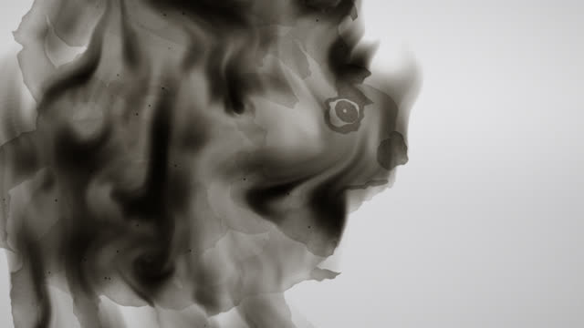
2 · 3.3초얼굴이 먼저face forms
머리부터 응결하는 순서(
sweep: head), 형체가 나타나기 직전의 반투명한 상태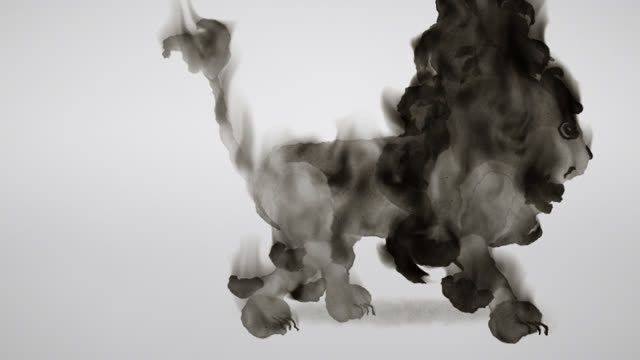
3 · 5.3초옅은 몸으로 걷기pale body
읽을 수 있게 된 옅은 몸, 갈기와 꼬리에서 흘러나가는 먹 연기, 미끄러지지 않는 발
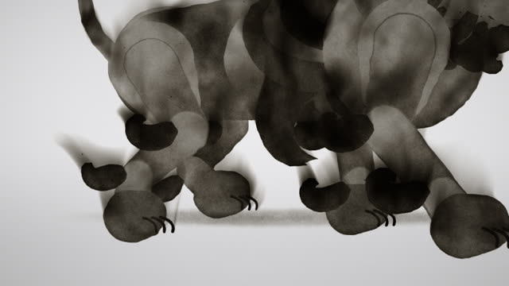
4 · 7.0초앞발paws
낮은 앵글의 발 근접, 바닥 그림자, 발목 뒤 불꽃 털
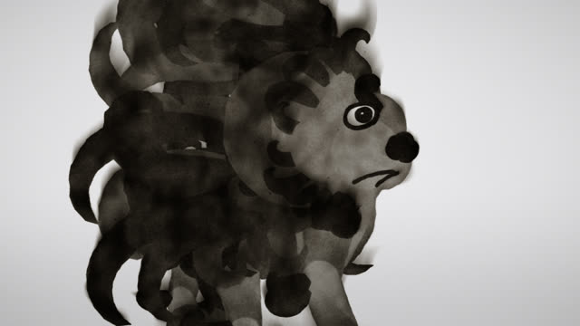
5 · 8.3초먹이 짙어짐ink darkens
몸에 고이는 짙은 먹 웅덩이, 3/4 정면의 낮은 앵글
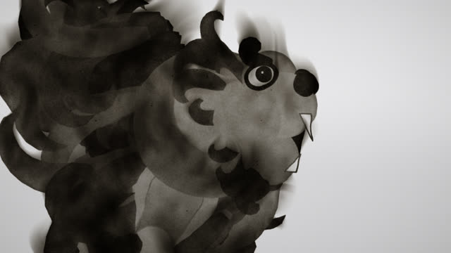
6 · 9.8초포효roar
벌린 턱과 흰 송곳니, 포효 순간에 높였다 내리는
fluid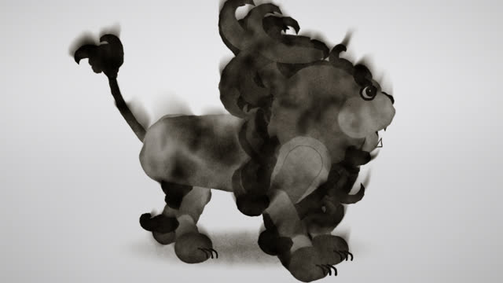
7 · 11.9초수호guardian
짙은 먹으로 완성되어도 가장자리에서 계속 흐르는 연기
鯨の息 · Whale Breath 새 주제 · 12.6초 · 6샷
바닥 없는 열린 물에서 먹의 흐름이 혹등고래가 되어 헤엄치고, 떠오르며 다시 먹으로 풀어집니다. 헤엄치는 몸, 느린 박자, 거꾸로 도는 응결은 원본에 없던 것입니다.
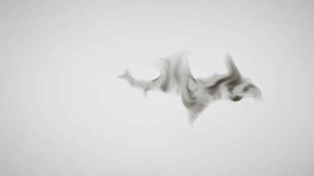
1 · 2.2초먹의 흐름drift
바닥 없는 열린 물, 길게 번지는 먹
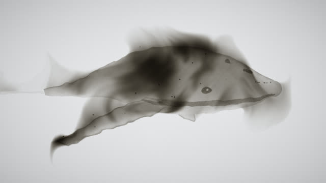
2 · 3.5초머리the head
형체가 나타나기 직전: 고래의 윤곽만 연기로 보이는 상태
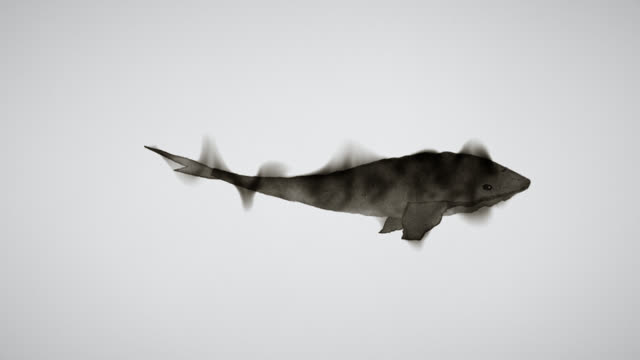
3 · 5.7초미끄러지듯glide
위아래로 치는 몸의 파동, 등은 짙고 배는 옅은 먹
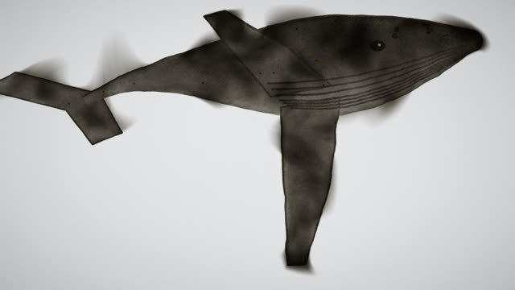
4 · 7.6초지느러미fin
아래에서 올려다본 가슴지느러미 젓기와 몸 기울임
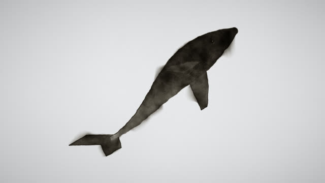
5 · 9.4초떠오름rise
머리를 들고 수면 쪽으로 오르는 고래
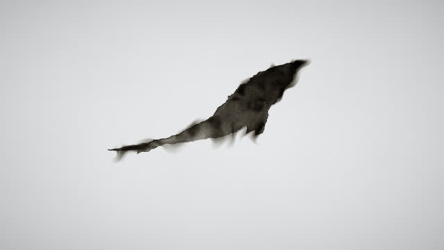
6 · 11.6초다시 먹으로breath
응결을 거꾸로 돌려 먹으로 풀어지는 마지막(
e 1 → .45)링크
- SKILL.md 워크플로
- 폴더 lib · scripts · references · starter · examples
- README.md 빠른 시작
- references/BRIEF.md 브리프 틀과 검토 기준
- references/LOOK.md 물속 먹으로 보이게 하는 것, 두 다이얼
- references/KIT.md API · 몸 규칙 · 샷 구성
- references/AI-VIDEO.md 원본의 기법과 레퍼런스 프레임
- references/LESSONS.md 겪은 문제와 해결